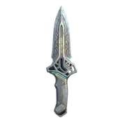

异星探索 · 关卡奖励
 距结束：剩余 2天 13:59:59
距结束：剩余 2天 13:59:59共 120 关，已自动定位到当前关。奖励关（level 为负）在「奖励关」页签里单独看。
1–30
31–60
61–90
91–120
奖励关
第 1–30 关
第 9 关
3×3 棋盘 · 全部地块可挖
×2
埋藏 2 件宝物
第 10 关
3×3 棋盘 · 全部地块可挖
大奖关

×1
埋藏 2 件宝物
第 11 关
4×4 棋盘 · 不可挖 4 格
×5
埋藏 2 件宝物
第 12 关
5×5 棋盘 · 不可挖 6 格
当前

×3
埋藏 2 件宝物
第 13 关
5×5 棋盘 · 不可挖 12 格
×6
埋藏 4 件宝物
第 14 关
4×4 棋盘 · 不可挖 4 格
×4
埋藏 2 件宝物
第 15 关
4×4 棋盘 · 不可挖 4 格
×2
埋藏 2 件宝物
第 16 关
4×4 棋盘 · 不可挖 4 格
×6
埋藏 2 件宝物